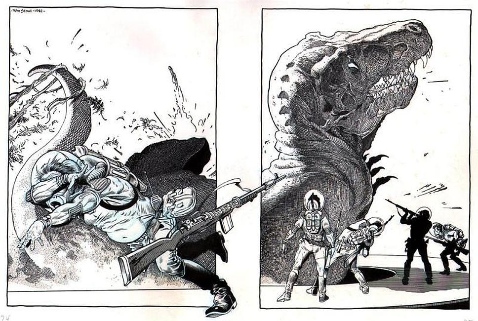

Alfonso "Al" Williamson (March 21, 1931 – June 12, 2010) was an American cartoonist, comic book artist and illustrator specializing in adventure, Western and science-fiction/fantasy.
Born in New York City, he spent much of his early childhood in Bogotá, Colombia before moving back to the United States at the age of 12. In his youth, Williamson developed an interest in comic strips, particularly Alex Raymond's Flash Gordon. He took art classes at Burne Hogarth's Cartoonists and Illustrators School, there befriending future cartoonists Wally Wood and Roy Krenkel, who introduced him to the work of illustrators who had influenced adventure strips. Before long, he was working professionally in the comics industry. His most notable works include his science-fiction/heroic fantasy art for EC Comics in the 1950s, on titles including Weird Science and Weird Fantasy.
In the 1960s, he gained recognition for continuing Raymond's illustrative tradition with his work on the Flash Gordon comic-book series, and was a seminal contributor to the Warren Publishing's black-and-white horror comics magazines Creepy and Eerie. Williamson spent most of the 1970s working on his own credited strip, another Raymond creation, Secret Agent X-9. The following decade, he became known for his work adapting Star Wars films to comic books and newspaper strips. From the mid-1980s to 2003, he was primarily active as an inker, mainly on Marvel Comics superhero titles starring such characters as Daredevil, Spider-Man, and Spider-Girl.
Williamson is known for his collaborations with a group of artists including Frank Frazetta, Roy Krenkel, Angelo Torres, and George Woodbridge, which was affectionately known as the "Fleagle Gang". Williamson has been cited as a stylistic influence on a number of younger artists, and encouraged many, helping such newcomers as Bernie Wrightson and Michael Kaluta enter the profession. He has won several industry awards, and six career-retrospective books about him have been published since 1998. Living in Pennsylvania with his wife Corina, Williamson retired in his seventies.
Williamson was inducted into the Will Eisner Comic Book Hall of Fame in 2000.
